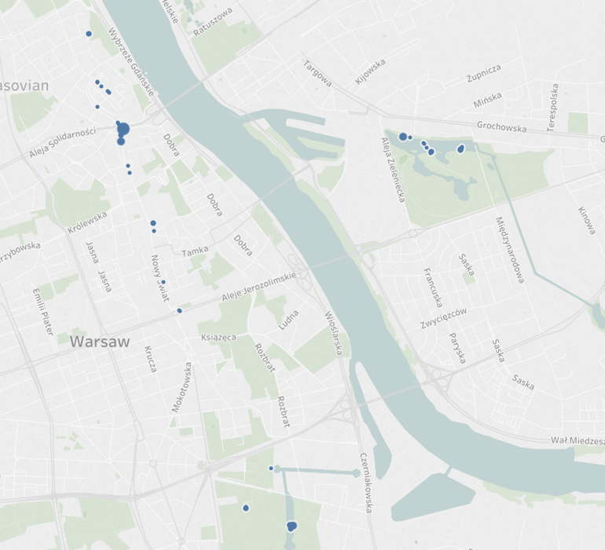
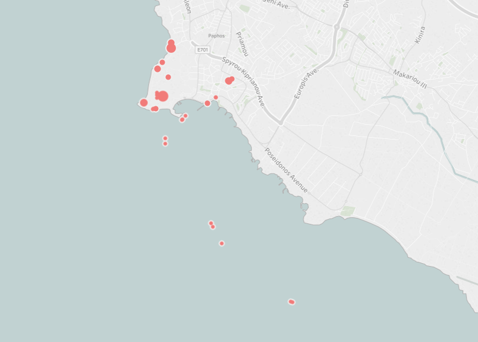

Trip Tracker - how it was made

It's starts off with the places I've been to in Indonesia, but you can also scroll to Cyprus, Montengro and a few other places too.
It's starts off with the places I've been to in Indonesia, but you can also scroll to Cyprus, Montengro and a few other places too.
I wanted to display my holiday photo locations on a map with Tableau.
I've found a website that can take an image and show the GPS data, but I want to do it for thousands of photos. So what I start looking for is a package of pre-written code (in python) that assists with this.
A package is where kind human(s) write freely available code to save other humans from reinventing the wheel.
So I’m looking for things where if I give it a photo it replies with all of the tags and data in that photo. From there I can get the location info and plot it using tableau.
Package one: I wanted to get it running in the command line so I can test it works. Discovered that everything (all of the versions of everything I'm trying to use and the code itself) is out of date and I keep keeping slapped with errors.
Eventually, I find that “image” needs to be changed to “Image” in one line of code.
I run the code, my first image didn’t have any GPS data. My second photo has an error. It’s not processing correctly.
I search online for more packages that might do the work for me. They both fail even to install. I’m getting grumpy. I discover that I can give Tableau an excel file of latitude and longitudes and it can plot those. This simplifies my problem. I just need lats and longs – that should be easy, right?
This is the stage that I always get to where I’m going to try and do it myself, and it’s going to be awful. It was awful.
Using the exifread package, which has incredibly limited documentation, I try and open a file, zap it with exifread and display the results out on the screen. I haven’t written any python code in so long that I am having to google the basics.
My code is not beautiful, but by some miracle it works. For a single file I have scrappy GPS data. Scrappy because it’s all in the wrong format showing as [7, 36, 26921/1000] instead of “7;36;26.920999…” but that’s not stopping me.
I enter the data into google maps and it takes me to the middle of sea. I have the correct latitude but my longitude should be -7 and it is just 7 😭.
I decide that’s later Sarah’s problem. I can fix the data by times -1 so I’m going to persevere.
Now I want all the data. I start trying to iterate through a folder, processing each file one at a time. I get a bit excited and I put 600 photos into the folder. This isn’t sensible, I’ve no idea what the performance is like and running this on so many files could grind my poor old laptop to a halt. On top of this top, I’m also now changing the code so I don’t even know if it will work.
It did work. I’ve got my list of data but it becomes apparent that Tableau needs lats and longs as decimals and I’ve got degrees. Poorly formatted degrees as well. My optimism of being able to process them has gone, they’ve somehow been rounded so are no longer accurate.
I’m more specific in what I’m searching for (decimal lat longs and not degrees) I found other people with my woes and some more code to try. It fails. I find the code this code was based on. It doesn’t have any of the iterating through a folder of pictures but I wrote that for the last attempt.
I put it all together and build. Output appears:
(None, None)
(None, None)
...
Heartbreak. 💔
But wait, not all my photos have GPS data. I scroll down and there they are, all 436 of them in their decimal-ed coordinated glory. 🎉
I put them into excel, remove the brackets and the “None” results. I add an index and load into tableau.
I expect it to be magical, but it was actually really underwhelming until I played around with the settings. I think I’ve grown to love it over time.
The final implementation was actually reasonably simple but I didn’t know the specifics of what I needed when I started out. I wasted time trying to figure out spatial files when an excel spreadsheet worked fine. I learnt lots so not sure it was actually wasted.
I’ve since changed it to write my results to a file. Final result: 1,232 locations.
For those of you that don’t code, I hope this was a bit of an insight into what goes on when someone who hasn't tried to code for a while tries to tackle a coding challenge.